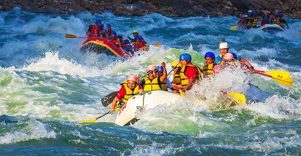

Our mission is to provide the best white water rafting experience possible. We strive to provide the best equipment, the best guides, and the best experience possible. We want to make sure that you have the best time possible while you are with us.

White Water Rafting
History
Founded in 1985, White Water Rafting began as a small, family-owned company in the heart of the Appalachian Mountains. Initially offering guided river rafting tours along the region's scenic and often treacherous rivers, the company quickly gained a reputation for safety, adventure, and exceptional customer service. With a passion for the outdoors and a deep commitment to conservation, White Water Rafting became a leader in eco-friendly adventure tourism.
Throughout the years, the company expanded its offerings, adding kayaking, canoeing, and multi-day expeditions, attracting adventurers from around the world. By the 2000s, White Water Rafting had established locations across the United States and internationally, becoming a recognized name in the adventure travel industry.
Today, White Water Rafting is known for its innovative trips, expert guides, and commitment to environmental sustainability. They continue to inspire thrill-seekers and nature lovers to explore the wild beauty of rivers worldwide.